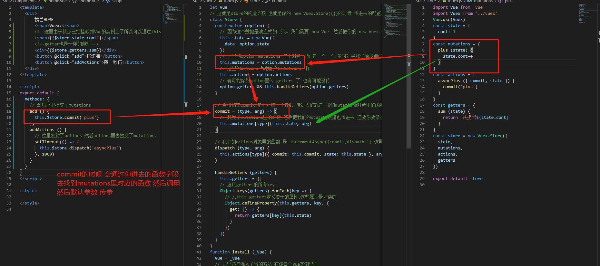

手写一个mini版Vuex
手写一个mini版Vuex
概念
1 | 1.Vuex 也是一个插件 |
流程
1 | 1.首先我们会 引入Vuex 然后 new Vuex.Store({配置项}) |
1 | //引入 Vuex |
1 | //挂载store |
使用
1 | 1.使用state 因为这里我们把我们的new Vuex.Store的配置最后都挂载到了 Vue上 所以在使用的时候 直接 this.$Store.state.cont 即可 |
1 | <template> |
mini版Vuex
1 | 1.首先我们使用的时候 是通过Vue.use 去使用的 所以会有一个install函数 然后我们在new Vuex.Store 说明 会有一个Store的构造函数 也就是说 这个Store的构造 和install函数 是在一个文件里 导出的时候是通过一个对象去导出的 |
1 | let Vue |

commit实现
1 | 1.首先我们在new Vuex.Store的时候 会传进去一个配置对象 里面会有mutations |

总结
1 | 1.跟我们上次写的 router 是一样的 都是插件 使用 use 调install函数 |
公告
感谢访问本站，如喜欢请收藏。本站主要分享前端知识，立志成为资深前端工程师，但目前是一个前端界的小学生 若喜欢可以打赏请博主喝一杯冰阔落
另外请大家多多支持淼哥的开源项目
https://github.com/flipped-aurora/gin-vue-admin
🌟🌟欢迎大家start 🌟🌟
欢迎加入博主的前端技术交流群